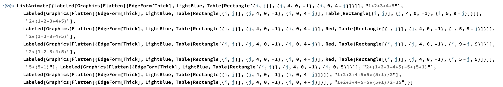

Math Animations
This is just for me to play around with coding up math visualizations in Mathematica or Manim.
I typically use Mathematica for animations/visualizations, but I want to play around with Manim.
Sum of first n natural numbers
This is just showing the n=5 case for the sum of first n natural numbers.
I've seen this visualization before, and liked it, so I decided to to create it myself in Mathematica.
Mathematica code for the animation:
Here's the code on GitHub: SumOfFirstNNatNums